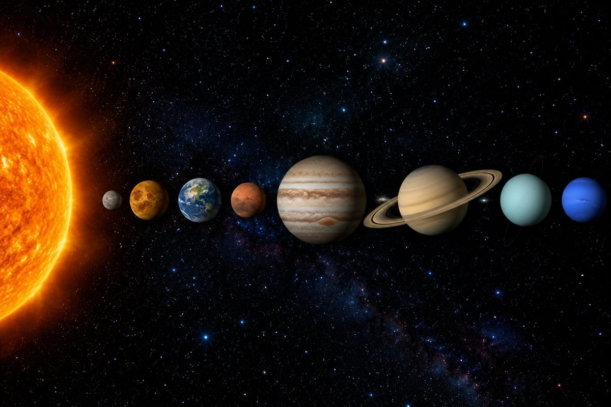

태양계에는 어떤 행성들이 있을까?

밤하늘에는 반짝이는 별이 가득해요. 그런데 그중에는 별이 아닌 '행성'도 섞여 있다는 사실, 알고 있나요?
태양은 우리에게 꼭 필요해요
태양은 스스로 빛과 열을 내는 별이에요. 태양 빛 덕분에 식물이 양분을 만들고, 동물은 그 식물을 먹고 살아요.
태양은 물을 증발시켜 비와 눈이 내리게 하고, 우리가 생활하기에 알맞은 온도를 만들어 줘요. 태양이 없다면 지구의 생물은 살 수 없어요.
햇빛으로 전기를 만드는 태양 전지판, 바닷물을 말려 소금을 얻는 염전도 태양 에너지를 이용해요.
태양계의 구성원
태양과 태양의 영향을 받는 천체들, 그리고 그 공간을 '태양계'라고 해요. 태양계의 중심에는 태양이 있어요.
태양 둘레를 도는 행성은 태양에서 가까운 순서대로 수성, 금성, 지구, 화성, 목성, 토성, 천왕성, 해왕성 8개예요. 달처럼 행성 둘레를 도는 천체는 '위성'이라고 해요.
외우기 팁: '수·금·지·화·목·토·천·해'!
행성의 크기와 거리
태양계 행성 중 가장 큰 것은 목성이고, 가장 작은 것은 수성이에요. 지구를 기준으로 보면 목성은 지름이 지구의 약 11배나 돼요.
수성, 금성, 지구, 화성은 상대적으로 작고 표면이 암석으로 되어 있어요. 목성, 토성, 천왕성, 해왕성은 크고 주로 기체로 되어 있으며 고리가 있어요. 태양에서 멀수록 행성 사이의 거리도 대체로 멀어요.
지구 지름을 1이라고 하면 목성은 약 11.2, 수성은 약 0.4예요.
별과 행성은 달라요
별은 태양처럼 스스로 빛을 내는 천체예요. 행성은 스스로 빛을 내지 못하고 태양 빛을 반사해서 밝게 보여요.
별은 아주 멀리 있어서 여러 날 관측해도 위치가 거의 변하지 않지만, 행성은 태양 둘레를 돌기 때문에 여러 날 관측하면 별들 사이에서 위치가 조금씩 바뀌어요.
새벽 동쪽 하늘에 아주 밝게 보이는 '샛별'은 별이 아니라 행성인 금성이에요.
북쪽 하늘의 별자리와 북극성
옛날 사람들은 밝은 별들을 이어 동물이나 물건 모양을 떠올려 '별자리'라고 이름 붙였어요. 북쪽 하늘에는 큰곰자리(북두칠성이 있는 별자리), 카시오페이아자리, 작은곰자리가 있어요.
북극성은 항상 북쪽 하늘에 있어서 방위를 찾는 데 도움이 돼요. 북두칠성 국자 끝의 두 별을 이은 거리의 약 5배만큼 떨어진 곳에 북극성이 있어요. 카시오페이아자리를 이용해서도 찾을 수 있어요.
북극성을 바라보면 내가 바라보는 쪽이 북쪽, 등 뒤가 남쪽이에요.
핵심 낱말
- 태양계
- 태양과 태양의 영향을 받는 천체들, 그리고 그 공간
- 행성
- 태양 둘레를 도는, 스스로 빛을 내지 못하는 천체
- 위성
- 행성 둘레를 도는 천체(예: 달)
- 별
- 스스로 빛을 내는 천체
- 별자리
- 밝은 별들을 이어 이름을 붙인 것
- 북극성
- 항상 북쪽 하늘에 있어 방위를 알려 주는 별
한 줄 정리
- 태양은 스스로 빛과 열을 내며 지구의 생물에게 꼭 필요해요.
- 태양계 행성은 수성·금성·지구·화성·목성·토성·천왕성·해왕성 8개이고, 목성이 가장 커요.
- 별은 스스로 빛을 내고, 북극성은 북두칠성이나 카시오페이아자리로 찾을 수 있어요.
학교 교육과정 연결
2015 개정 교육과정에서는 5학년 '태양계와 별' 단원에서 배웠는데, 2022 개정 교육과정부터는 3~4학년에서 배워요.
- [4과13-02] 태양계 구성원을 알고, 태양과 행성을 조사할 수 있다.
- [4과13-03] 별의 정의를 알고, 북극성 주변의 별자리를 관찰할 수 있다.